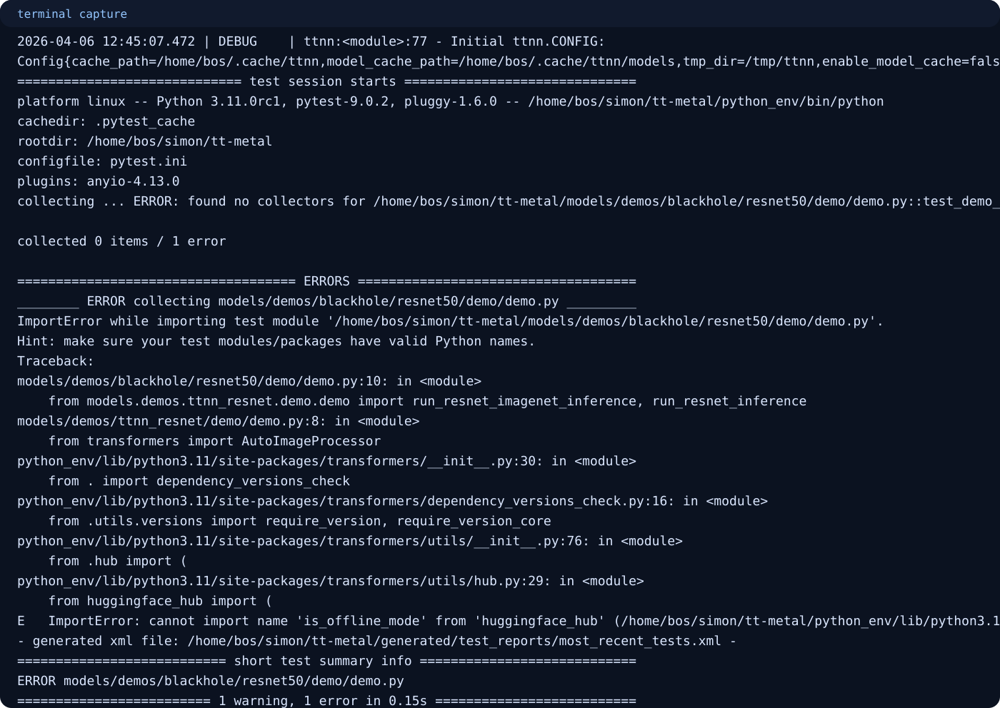

TT-NPE practical guide • based on upstream examples and Linux tester output from 2026-04-06
TT-NPE Practical Example Manual
This guide starts with the examples that work with tt-npe alone, then shows an optional
larger ResNet50-context run from the validated tester environment. It does not assume TT-XLA is already
installed before you learn or use tt-npe.
Bundled workload JSON
Programmatic Python workload
Optional ResNet50-context workload
Standalone NPE use before cross-tool workflows
Start With The Bundled Workload
tt_npe.py -w tt_npe/workload/example_wl.json
If you want the fully explicit version instead of relying on ENV_SETUP:
python3 install/bin/tt_npe.py -w tt_npe/workload/example_wl.json
Success means the workload loads, simulation finishes, and stats are printed.

Run The Programmatic Python Example
export PYTHONPATH=$PWD/install/lib:$PWD/install/bin python3 install/bin/programmatic_workload_generation.py
This demonstrates the Python bindings and is the best bridge toward generating your own workloads in code.

Optional ResNet50 Context Example
In that environment, a ResNet50-context workload JSON was created to reflect an earlier model project. The key
detail is that tt-npe still consumed a workload JSON, not TT-XLA compiler artifacts directly.
./local/run_resnet50_tt_xla_context.sh ./local/output
A successful run produced a timeline JSON file under ./local/output.

What TT-NPE Is Best At Consuming
The simplest way to learn the tool.
The right next step when you want automation or synthesis.
Best used after the standalone path is already working.
Advanced Flow Caveat
tt-metal ResNet50-to-tt-npe trace path. That
advanced route did not complete on the validated host because of environment issues outside the core
tt-npe install.

Best Beginner Sequence
./build-npe.sh source ENV_SETUP tt_npe.py -w tt_npe/workload/example_wl.json export PYTHONPATH=$PWD/install/lib:$PWD/install/bin python3 install/bin/programmatic_workload_generation.py
If those two examples succeed, you already have a practical tt-npe workflow that stands on its own.